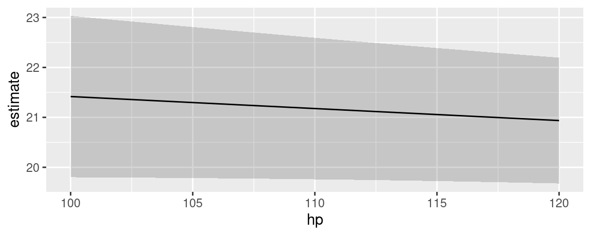

library(marginaleffects)
dat <- mtcars
dat$cyl <- as.factor(dat$cyl)
dat$am <- as.logical(dat$am)
mod <- lm(mpg ~ hp + cyl + am, data = dat)5 Marginal Means
In the context of this package, “marginal means” refer to the values obtained by this three step process:
- Construct a “grid” of predictor values with all combinations of categorical variables, and where numeric variables are held at their means.
- Calculate adjusted predictions for each cell in that grid.
- Take the average of those adjusted predictions across one dimension of the grid to obtain the marginal means.
For example, consider a model with a numeric, a factor, and a logical predictor:
Using the predictions() function, we set the hp variable at its mean and compute predictions for all combinations for am and cyl:
p <- predictions(
mod,
newdata = datagrid(am = unique, cyl = unique))For illustration purposes, it is useful to reshape the above results:
| cyl | TRUE | FALSE | Marginal means by cyl |
|---|---|---|---|
| 6 | 21.0 | 16.9 | 19.0 |
| 4 | 25.0 | 20.8 | 22.9 |
| 8 | 21.4 | 17.3 | 19.4 |
| Marginal means by am | 22.5 | 18.3 |
The marginal means by am and cyl are obtained by taking the mean of the adjusted predictions across cells. The marginal_means() function gives us the same results easily:
marginal_means(mod)
#>
#> Term Value Mean Std. Error z Pr(>|z|) 2.5 % 97.5 %
#> cyl 6 19.0 1.073 17.7 <0.001 16.9 21.1
#> cyl 4 22.9 1.357 16.9 <0.001 20.2 25.5
#> cyl 8 19.4 1.377 14.1 <0.001 16.7 22.1
#> am TRUE 22.5 0.834 26.9 <0.001 20.8 24.1
#> am FALSE 18.3 0.785 23.3 <0.001 16.8 19.9
#>
#> Results averaged over levels of: hp, cyl, am
#> Columns: term, value, estimate, std.error, statistic, p.value, conf.low, conf.highWe could obtain the same results with the by argument of the predictions() function, which allows us to marginalize across some predictors:
predictions(
mod,
by = "am",
newdata = datagrid(am = unique, cyl = unique))
#>
#> am Estimate Std. Error z Pr(>|z|) 2.5 % 97.5 %
#> TRUE 22.5 0.834 26.9 <0.001 20.8 24.1
#> FALSE 18.3 0.785 23.3 <0.001 16.8 19.9
#>
#> Columns: am, estimate, std.error, statistic, p.value, conf.low, conf.high
predictions(
mod,
by = "cyl",
newdata = datagrid(am = unique, cyl = unique))
#>
#> cyl Estimate Std. Error z Pr(>|z|) 2.5 % 97.5 %
#> 6 19.0 1.07 17.7 <0.001 16.9 21.1
#> 4 22.9 1.36 16.9 <0.001 20.2 25.5
#> 8 19.4 1.38 14.1 <0.001 16.7 22.1
#>
#> Columns: cyl, estimate, std.error, statistic, p.value, conf.low, conf.highThe same results can be achieved using the powerful emmeans package:
library(emmeans)
emmeans(mod, specs = "cyl")
#> cyl emmean SE df lower.CL upper.CL
#> 4 22.9 1.36 27 20.1 25.7
#> 6 19.0 1.07 27 16.8 21.2
#> 8 19.4 1.38 27 16.5 22.2
#>
#> Results are averaged over the levels of: am
#> Confidence level used: 0.95
emmeans(mod, specs = "am")
#> am emmean SE df lower.CL upper.CL
#> FALSE 18.3 0.785 27 16.7 19.9
#> TRUE 22.5 0.834 27 20.8 24.2
#>
#> Results are averaged over the levels of: cyl
#> Confidence level used: 0.955.1 Marginal Means vs. Average Predictions
What should scientists report? Marginal means or average predictions?
Many analysts ask this question, but unfortunately there isn’t a single answer. As explained above, marginal means are a special case of predictions, made on a perfectly balanced grid of categorical predictors, with numeric predictors held at their means, and marginalized with respect to some focal variables. Whether the analyst prefers to report this specific type of marginal means or another kind of average prediction will depend on the characteristics of the sample and the population to which they want to generalize.
After reading this vignette and the discussion of emmeans in the Alternative Software vignette, you may want to consult with a statistician to discuss your specific real-world problem and make an informed choice.
5.2 Interactions
By default, the marginal_means() function calculates marginal means for each categorical predictor one after the other. We can also compute marginal means for combinations of categories by setting cross=TRUE:
Regardless of the scale of the predictions (type argument), marginal_means() always computes standard errors using the Delta Method:
marginal_means(
titanic,
type = "response",
variables = c("Sex", "PClass"))
#>
#> Term Value Mean Std. Error z Pr(>|z|) 2.5 % 97.5 %
#> Sex female 0.738 0.0207 35.68 <0.001 0.698 0.779
#> Sex male 0.235 0.0203 11.62 <0.001 0.196 0.275
#> PClass 1st 0.708 0.0273 25.95 <0.001 0.654 0.761
#> PClass 2nd 0.511 0.0235 21.76 <0.001 0.465 0.557
#> PClass 3rd 0.242 0.0281 8.59 <0.001 0.187 0.297
#>
#> Results averaged over levels of: Sex, PClass
#> Columns: term, value, estimate, std.error, statistic, p.value, conf.low, conf.highWhen the model is linear or on the link scale, it also produces confidence intervals:
marginal_means(
titanic,
type = "link",
variables = c("Sex", "PClass"))
#>
#> Term Value Mean Std. Error z Pr(>|z|) 2.5 % 97.5 %
#> Sex female 1.6407 0.206 7.984 <0.001 1.238 2.043
#> Sex male -1.3399 0.124 -10.828 <0.001 -1.582 -1.097
#> PClass 1st 1.6307 0.271 6.028 <0.001 1.100 2.161
#> PClass 2nd 0.0997 0.211 0.472 0.637 -0.314 0.513
#> PClass 3rd -1.2792 0.155 -8.255 <0.001 -1.583 -0.975
#>
#> Results averaged over levels of: Sex, PClass
#> Columns: term, value, estimate, std.error, statistic, p.value, conf.low, conf.highIt is easy to transform those link-scale marginal means with arbitrary functions using the transform argument:
marginal_means(
titanic,
type = "link",
transform = insight::link_inverse(titanic),
variables = c("Sex", "PClass"))
#>
#> Term Value Mean Pr(>|z|) 2.5 % 97.5 %
#> Sex female 0.838 <0.001 0.775 0.885
#> Sex male 0.208 <0.001 0.170 0.250
#> PClass 1st 0.836 <0.001 0.750 0.897
#> PClass 2nd 0.525 0.637 0.422 0.626
#> PClass 3rd 0.218 <0.001 0.170 0.274
#>
#> Results averaged over levels of: Sex, PClass
#> Columns: term, value, estimate, p.value, conf.low, conf.highmarginal_means() defaults to reporting EMMs for each category individually, without cross-margins:
titanic2 <- glmer(
Survived ~ Sex + PClass + Age + (1 | PClass),
family = binomial,
data = dat)
marginal_means(
titanic2,
variables = c("Sex", "PClass"))
#>
#> Term Value Mean Std. Error z Pr(>|z|) 2.5 % 97.5 %
#> Sex female 0.741 0.0240 30.8 <0.001 0.694 0.788
#> Sex male 0.253 0.0203 12.5 <0.001 0.213 0.293
#> PClass 1st 0.707 0.0289 24.5 <0.001 0.650 0.763
#> PClass 2nd 0.494 0.0287 17.2 <0.001 0.437 0.550
#> PClass 3rd 0.291 0.0268 10.9 <0.001 0.238 0.344
#>
#> Results averaged over levels of: Sex, PClass
#> Columns: term, value, estimate, std.error, statistic, p.value, conf.low, conf.highWe can force the cross:
marginal_means(
titanic2,
cross = TRUE,
variables = c("Sex", "PClass"))
#>
#> Mean Std. Error z Pr(>|z|) 2.5 % 97.5 %
#> 0.9288 0.0161 57.71 <0.001 0.8973 0.9604
#> 0.7819 0.0357 21.93 <0.001 0.7120 0.8518
#> 0.5118 0.0458 11.17 <0.001 0.4220 0.6017
#> 0.4844 0.0468 10.35 <0.001 0.3926 0.5761
#> 0.2051 0.0308 6.66 <0.001 0.1448 0.2655
#> 0.0702 0.0135 5.18 <0.001 0.0436 0.0967
#>
#> Columns: Sex, PClass, estimate, std.error, statistic, p.value, conf.low, conf.high
5.3 Group averages with the by argument
We can collapse marginal means via averaging using the by argument:
dat <- mtcars
dat$am <- factor(dat$am)
dat$vs <- factor(dat$vs)
dat$cyl <- factor(dat$cyl)
mod <- glm(gear ~ cyl + vs + am, data = dat, family = poisson)
by <- data.frame(
by = c("(4 & 6)", "(4 & 6)", "(8)"),
cyl = c(4, 6, 8))
marginal_means(mod, by = by, variables = "cyl")
#>
#> By Mean Pr(>|z|) 2.5 % 97.5 %
#> (4 & 6) 3.86 <0.001 2.86 5.22
#> (8) 3.59 <0.001 2.11 6.13
#>
#> Results averaged over levels of: vs, am, cyl
#> Columns: by, estimate, p.value, conf.low, conf.highAnd we can use the hypothesis argument to compare those new collapsed subgroups:
marginal_means(mod, by = by, variables = "cyl", hypothesis = "pairwise")
#>
#> Term Mean Std. Error z Pr(>|z|) 2.5 % 97.5 %
#> (4 & 6) - (8) 0.271 1.39 0.195 0.845 -2.45 3
#>
#> Results averaged over levels of: vs, am, cyl
#> Columns: term, estimate, std.error, statistic, p.value, conf.low, conf.high5.4 Custom Contrasts and Linear Combinations
See the vignette on Custom Contrasts and Combinations
5.5 Tidy summaries
The summary, tidy, and glance functions are also available to summarize and manipulate the results:
mm <- marginal_means(mod)
tidy(mm)
#> # A tibble: 7 × 6
#> term value estimate p.value conf.low conf.high
#> <chr> <fct> <dbl> <dbl> <dbl> <dbl>
#> 1 cyl 6 3.90 1.57e-12 2.67 5.68
#> 2 cyl 4 3.83 2.34e- 8 2.39 6.13
#> 3 cyl 8 3.59 2.66e- 6 2.11 6.13
#> 4 vs 0 3.79 1.88e-12 2.62 5.50
#> 5 vs 1 3.75 5.82e-10 2.47 5.69
#> 6 am 1 4.34 6.83e-19 3.14 6.01
#> 7 am 0 3.27 3.96e-15 2.43 4.40
glance(mm)
#> # A tibble: 1 × 7
#> aic bic r2.nagelkerke rmse nobs F logLik
#> <dbl> <dbl> <dbl> <dbl> <int> <dbl> <logLik>
#> 1 113. 120. 0.672 0.437 32 0.737 -51.50168
summary(mm)
#>
#> Term Value Mean Pr(>|z|) 2.5 % 97.5 %
#> cyl 6 3.90 <0.001 2.67 5.68
#> cyl 4 3.83 <0.001 2.39 6.13
#> cyl 8 3.59 <0.001 2.11 6.13
#> vs 0 3.79 <0.001 2.62 5.50
#> vs 1 3.75 <0.001 2.47 5.69
#> am 1 4.34 <0.001 3.14 6.01
#> am 0 3.27 <0.001 2.43 4.40
#>
#> Results averaged over levels of: cyl, vs, am
#> Columns: term, value, estimate, p.value, conf.low, conf.highThanks to those tidiers, we can also present the results in the style of a regression table using the modelsummary package.
5.6 Case study: Multinomial Logit
This example requires version 0.2.0 of the marginaleffects package.
To begin, we generate data and estimate a large model:
library(nnet)
library(marginaleffects)
set.seed(1839)
n <- 1200
x <- factor(sample(letters[1:3], n, TRUE))
y <- vector(length = n)
y[x == "a"] <- sample(letters[4:6], sum(x == "a"), TRUE)
y[x == "b"] <- sample(letters[4:6], sum(x == "b"), TRUE, c(1 / 4, 2 / 4, 1 / 4))
y[x == "c"] <- sample(letters[4:6], sum(x == "c"), TRUE, c(1 / 5, 3 / 5, 2 / 5))
dat <- data.frame(x = x, y = factor(y))
tmp <- as.data.frame(replicate(20, factor(sample(letters[7:9], n, TRUE))))
dat <- cbind(dat, tmp)
void <- capture.output({
mod <- multinom(y ~ ., dat)
})Try to compute marginal means, but realize that your grid won’t fit in memory:
marginal_means(mod, type = "probs")
#> Error: You are trying to create a prediction grid with more than 1 billion rows, which is likely to exceed the memory and computational power available on your local machine. Presumably this is because you are considering many variables with many levels. All of the functions in the `marginaleffects` package include arguments to specify a restricted list of variables over which to create a prediction grid.Use the variables and variables_grid arguments to compute marginal means over a more reasonably sized grid:
marginal_means(mod,
type = "probs",
variables = c("x", "V1"),
variables_grid = paste0("V", 2:3))5.7 Plot conditional marginal means
The marginaleffects package offers several functions to plot how some quantities vary as a function of others:
-
plot_predictions: Conditional adjusted predictions – how does the predicted outcome change as a function of regressors? -
plot_comparisons: Conditional comparisons – how do contrasts change as a function of regressors? -
plot_slopes: Conditional marginal effects – how does the slope change as a function of regressors?
There is no analogous function for marginal means. However, it is very easy to achieve a similar effect using the predictions() function, its by argument, and standard plotting functions. In the example below, we take these steps:
- Estimate a model with one continuous (
hp) and one categorical regressor (cyl). - Create a perfectly “balanced” data grid for each combination of
hpandcyl. This is specified by the user in thedatagrid()call. - Compute fitted values (aka “adjusted predictions”) for each cell of the grid.
- Use the
byargument to take the average of predicted values for each value ofhp, across margins ofcyl. - Compute standard errors around the averaged predicted values (i.e., marginal means).
- Create symmetric confidence intervals in the usual manner.
- Plot the results.
library(ggplot2)
mod <- lm(mpg ~ hp + factor(cyl), data = mtcars)
p <- predictions(mod,
by = "hp",
newdata = datagrid(
model = mod,
hp = seq(100, 120, length.out = 10),
cyl = mtcars$cyl))
ggplot(p) +
geom_ribbon(aes(hp, ymin = conf.low, ymax = conf.high), alpha = .2) +
geom_line(aes(hp, estimate))